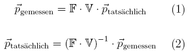
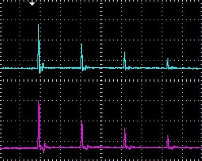
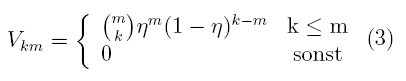
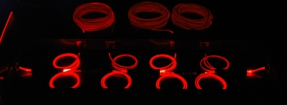
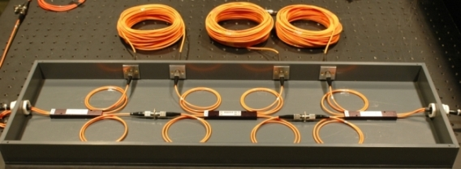
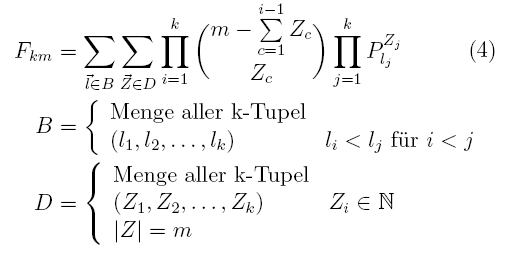

Photonenstatistik Kapitel 2:
Messung und Auswertung des Experimentes
Im letzten Kapitel wurden der Aufbau und die Vereinfachung des Experimentes erläutert. In diesem Kapitel werden Messungen mit dem Experiment durchgeführt. Aufgrund der langen Glasfaserkabel entstehen im Versuch große Photonenverluste. Zur Auswertung des Experimentes muss deshalb die gemessene und die tatsächliche Photonenstatistik unterschieden werden. Auf die Theorie der Umrechnung zwischen den Statistiken wird weiter unten eingangangen.
Messung mit dem Strahlteilernetzwerk
Anstatt mit hellen Laserpulsen wie im letzten Kapitel kann das Netzwerk aus Strahlteilern auch mit Pulsen aus einzelnen Photonen betrieben werden. Ein Photonenpuls aus z. B. acht einzelnen Photonen teilt sich im Idealfall auf die acht vorhandenen Zeitfenster auf. In unserem interaktiven Experiment werden die einzelnen Photonen über den Prozess der parametrischen Fluoreszenz in einem nichtlinearen Kristall erzeugt (siehe unter Grundlagen, Koinzidenz, Existenz des Photons). Die Messung der Photonenstatistik erfolgt einmal mit dem Trigger-Detektor und einmal ohne den Trigger-Detektor. Die Leistung des gepulsten Lasers kann im folgenden interaktiven Experiment über die beiden grauen Taster neben dem Polarisationsdreher vor dem Kristall verändert werden. Nach jeder Messung erfolgt die Datenauswertung in Echtzeit. Die Verluste im Glasfasernetzwerk werden über eine Verlustmatrix herausgerechnet. Die ungleiche Verteilung der Photonen aufgrund nichtidealer symmetrischer 50% Strahlteiler wird über Faltungsmatrizen korrigiert. Beide Matrizen werden weiter unten erläutert. Nach der Datenauswertung und der Berechnung der Matrizen wird ein Messprotokoll mit Fehlerbetrachtung erzeugt, das als PDF Dokument heruntergeladen werden kann. Die genauen Schritte von der Datenerfassung bis zur Auswertung werden im interaktiven Experiment links oben angezeigt. Ermitteln Sie die Photonenstatistik mit und ohne Trigger-Detektor bei verschiedenen Laserleistungen. Was sagen die Statistiken mit und ohne Trigger aus? Welche maximale Photonenzahl kann erzeugt werden?
Beobachtung:
Mit dem Trigger-Detektor kann bei maximaler Laserleistung die Photonenzahl n=3 erzeugt werden. Noch höhere Photonenzahlen wären mit einem noch intensiveren gepulsten Lasersystem oder mit effizienteren Kristallen (gepolte Kristalle) möglich. Höhere Photonenzahlen sind allerdings bei Experimenten mit einzelnen Photonen nicht erwünscht. Bei einer geringen Laserleistung liegt die Wahrscheinlichkeit für einzelne Photonen (n=1) bei 99,7%. Es handelt sich bei dieser geringen Laserleistung um eine angekündigte Einzelphotonenquelle. Im nächsten Kapitel wird die Photonenstatistik der parametrischen Fluoreszenz aufgenommen und mit verschiedenen Statistiken verglichen.
Theorie: Von der gemessenen zur tatsächlichen Photonenstatistik
Die im Experiment gemessene Photonenstatistik entspricht nicht der tatsächlichen Photonenstatistik. Im Experiment ergeben sich durch die Glasfaserkabel, Strahlteiler und Detektoren große Photonenverluste. Die Verluste werden durch das Modell eines virtuellen Strahlteilers behandelt (siehe Existenz des Photons - Kapitel_3) und über die Verlustmatrix V in die Rechnung miteinbezogen. Die Photonen teilen sich im nichtidealen Strahlteilernetzwerk nicht gleichmäßig auf. Die Möglichkeiten, wie sich eine bestimmte Anzahl an Photonen in den Strahlteilern aufteilen kann wird mit der Faltungsmatrix F in die Rechnung miteinbezogen. Mit der Formel 1 kann von der tatsächlichen Photonenstatistik auf die gemessene Photonenstatistik umgerechnet werden. Durch das Experiment ist allerdings nur die gemessene Photonenstatistik bekannt und die tatsächliche Photonenstatistik muss ermittelt werden. Dies wird durch Invertierung der Formel 1 erreicht.

Theorie: Verluste im Strahlteilernetzwerk
Im Strahlteilernetzwerk treten erhebliche Verluste auf. Im Oszilloskopbild (Abb. 1) ist mit hellem gepulsten Laserlicht eine deutliche Abnahme der Amplitude bei jedem Zeitfenster erkennbar. Je mehr der einzelne Puls über die Glasfaserkabel verzögert wird, desto größer ist der Verlust.

Abb. 1: Reduzierung der Leistung eines Pulses durch das Netzwerk
Wo treten im Strahlteilernetzwerk die größten Verluste auf? Um diese Frage zu klären wird intensives rotes Laserlicht (cw-Laser, 6mW, 635nm) in das Glasfasernetzwerk eingekoppelt. Mit einer Digitalkamera und einer Belichtungszeit von 30s können die Verlsute sichtbar gemacht werden (Abb. 2). Deutlich ist an dem Leuchten zu erkennen, dass in jedem Stück Glasfaserkabel und vor allem an den faserintegrierten Strahlteilern große Verluste auftreten. Mit Hilfe der Koinzidenzmethode und dem Trigger-Detektor können die Verluste im Netzwerk bei der Messung bestimmt werden (siehe Koinzidenz - Kapitel 2). Die Verluste können als Bernoulli-Experiment mit zwei möglichen Ereignissen beschrieben werden. Der Ausgang eines Bernoulli-Experiments lässt sich für das Experiment mit der folgenden Verlustmatrix V beschreiben:
.

Abb. 2: Verluste im Strahlteilernetzwerk
oben: Verluste bei intensiven rotem Laserlicht (Belichtung: 30s)
unten: Aufbau bei normalem Licht
Theorie: Aufteilung der Photonen im Strahlteilernetzwerk
Für eine bestimmte Photonenzahl gibt es verschiedene Möglichkeiten, wie diese sich im Strahlteilernetzwerk aufteilen kann. Die Aufteilung wird über die Faltungsmatrix F (Formel 4) in die Berechnung der tatsächlichen Photonenstatistik mit einbezogen. Die Faltungsmatrix berücksichtigt folgende Fehlerquellen der gemessenen Photonenstatistik:
- Möglichkeiten, welche Detektoren gleichzeitig ausgelöst werden könnten, um k Ereignisse zu messen (Menge B).
- Möglichkeiten der Verteilung von m Photonen auf alle Ausgangskombinationen (Menge D).
- Nicht exakte Strahlteilerverhältnisse von 50% (Wahrscheinlichkeit P).

Originaldaten aus dem Experiment:
10µW, 9µW, 8µW, 7µW, 6µW, 5µW, 4µW, 3µW, 2µW, 1µW, 0.1µW
Wir bedanken uns für die wissenschaftliche Unterstützung zum Experiment und zur Datenauswertung bei der Max-Planck Nachwuchsforschungsgruppe von Frau Dr. Silberhorn.
Zum nächsten Kapitel: Photonenstatistik der parametrischen Fluoreszenz [klick]
Zurück zur Übersicht [klick]
Autoren: A. Strunz, P. Bronner, Oktober 2008